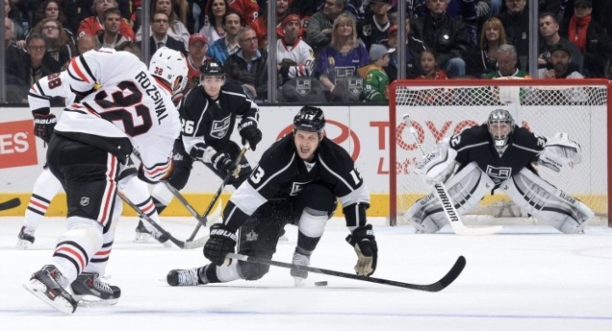
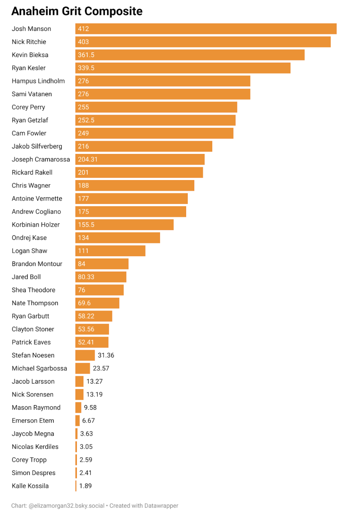
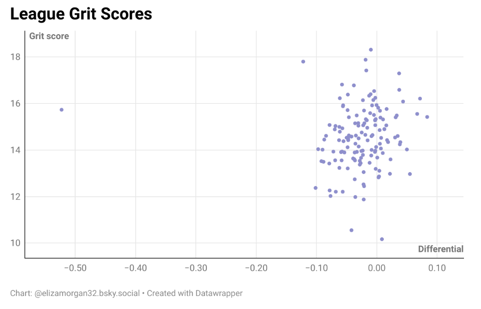
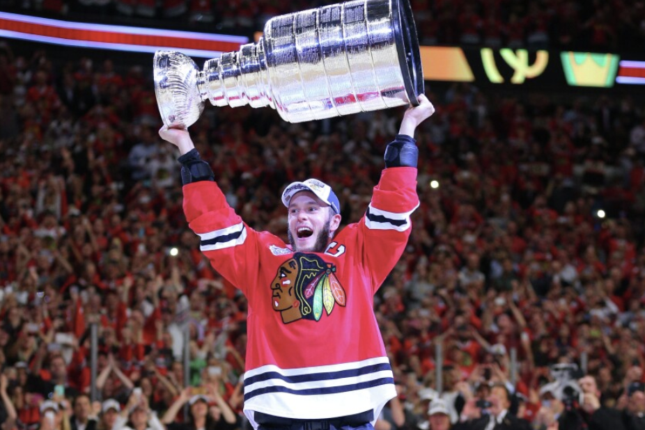

No Grit. No Grind. No Greatness
By Eliza Morgan | January 09, 2026
No Grit. No Grind. No Greatness, read the slogan the Toronto Maple Leafs displayed on the back wall of their press conference. It’s a long-held belief in the NHL that without grit and grind—without players willing to put their bodies on the line and play a physical style—come playoffs, a team will fall apart.
Since the creation of the President’s Trophy in the 1985-86 NHL season (given to the team with the best regular-season record), only 8 teams have won both the President’s Trophy and the Stanley Cup in the same season over that 39-year timeframe, or about 20% of the time. This number might seem low; in the NBA, with a similar number of teams, the team with the best regular-season record has won the championship about 60% of the time.
Facially, this suggests that in the NHL there might be some difference between regular season success and playoff success, a sentiment often expressed by those across the league. The Stanley Cup playoffs are widely considered more physical due to their 7-game-per-series format and increased intensity. “When the stakes get raised, the physical intensity of the games increases significantly…over time, if you constantly are being physical on your opponent, it adds up,” Washington Capitals coach Spencer Carbery has said.

One wonders if that’s true—if teams that play a grittier, in-your-face style might have some sort of advantage during the playoffs, when the game and strategy changes to which team can grind the other down faster.
Getting Into Grit
I began by taking data from the 2016-2017 NHL season up until the most recent 2024-2025 one. I used regular-season data to construct a per minute “grit score” for each player.
While it’s quantitatively different to measure exactly what “grit” is—or, as some like to call it, dawg per 60—taking hits, receiving hits, blocking shots, and accruing penalties are signs of a player that is physically involved in the game. Players who battle more along the boards, or punish other players that do, are more likely to hit and receive hits as well as accrue penalties. Additionally, a willingness to block shots indicates a willingness to risk injury and a disposition towards using one’s body as a physical tool.
I then used these grit scores per minute to build ice-time composites of each team, each year, with the assumption that players with under 300 minutes of ice time per season might be at risk of a skewed statistic, where either they perform too many grit-creating events, or fail to produce enough. To get around this, I treated players with under 300 minutes as at replacement; I took an average grit per minute of both forwards and defensemen on that team with over 300 minutes of ice time, and then, based on the position of that under-300 player, treated that average as their grit per minute.
I treated multiple-team players as having split their minutes equally between games; i.e., if they played 20 games with Team 1 and 40 with Team 2, and had 60 total minutes of ice time, I assigned 20 minutes to Team 1 and 40 to Team 2. I took individual grit scores per minute and multiplied it by ice time for the team to get a total grit contribution for each player, which I then converted into a team metric of grit per 60, and additionally broke that out by forwards and defensemen.
Here, for example, is what the Anaheim Ducks’ total grit contribution looked like in the 2016-2017 season:
And, after converting those back to per-minute, grit scores, creating a team average, and standardizing to per-60, here are their team statistics:
| FWD GRIT/60 | DEF GRIT/60 | TEAM GRIT/60 |
|---|---|---|
| 14.12239161 | 16.21489833 | 14.96023105 |
The way I constructed grit scores for each team resulted in most teams most years scoring between 11 and 18, with a higher grit score resulting in a more grindier team.
Regular season grit did not have a significant effect on playoff outcome; teams that had a more gritty style did not tend to make nor win playoffs as a result of their grittiness.
Getting Into Corsi
However, I wanted to look at relative performance; do teams with a higher grit level tend to perform better in the playoffs, assuming that they’ve made it, than they do in the regular season? To analyze this, I used team-level 5-on-5 Corsi.
Corsi is a metric named after former Buffalo Sabres coach Jim Corsi that measures shot attempt differential; it is calculated as Corsi For, or CF
subtracted from Corsi Against, or CA
such that Corsi C is equal to CF - CA.
Additionally, Corsi can be converted into a Corsi For percentage, using the formula
which is what I used as the metric to measure team performance. I subtracted regular season Corsi For percentage from playoff Corsi For percentage to find the differential.
I had expected that, given the perceived grittier nature of playoff hockey, that teams with a higher grit score would also have a positive Corsi differential; ideally, they should do comparatively better in an environment more suited to their play style.
Additionally, we should expect Corsi on average to decrease as during playoffs teams are playing against other highly skilled teams. Over the course of the regular season, top teams benefit from playing against relatively less skilled teams; this increases their Corsi For from what it would be playing only against other playoff-calibre teams.
But is this actually the case?
The answer, unfortunately, is no. Although this graph might visually indicate a slight positive correlation, regressing the grit score against the CF% differential does not yield a significant relationship between the two variables.
| Multiple R | 0.06092857 |
| R Square | 0.003712291 |
| Adjusted R Square | -0.00340405 |
| Standard Error | 0.056287558 |
| Intercept P-value | 0.223612838 |
| X-var 1 P-value | 0.471340313 |
Conclusions
While this particular test failed to indicate a connection between grit and playoff performance, that does not mean that there isn’t one.
For one, my measurement of grit is extremely subjective, as might any measurement be. Often it’s considered an attitude towards play rather than the actions of the player themself, or it’s a function of coaches choosing to run systems that favor more player-on-player interaction, like a 2-1-2 forecheck. There might be other ways to measure or quantify grit, or it might not be something that is quantifiable at all; one issue with hockey statistics in general is that hockey is characterized by a lot of concurrent, multiple-person events such that it’s difficult if not impossible to dilute player performance and contribution to statistical models.
Analysis of playoff performance can also be difficult to quantitatively evaluate. Some playoff teams are eliminated in the first round, meaning that they could play as little as four games, and those four games are all against the same opponent. Since metrics generally take a while to stabilize, and since different opponents and situations are important to establishing a league-wide metric, any level of playoff performance analysis is necessarily limited by these factors.
Coaches, players, and broadcasters around the league have commented on the grittiness of playoff hockey and the relative success of teams that can play a grittier style. Teams that are considered gritty—for example, the Florida Panthers—tend to win Stanley Cups (with the Panthers winning back-to-back recent titles) and perform well in the playoffs. There might never be the ability to build a model that confirms this; nonetheless, its absence does nothing to diminish the role grit has in winning a Stanley Cup.